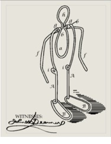
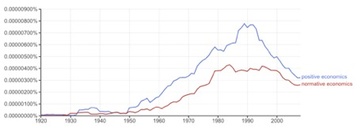

Initially published as Part One. Now with the final two sections added.
Minds are not for thinking, traditionally conceived, but for doing, for getting things done in the world in real time
Wilson and Foglia, "Embodied Cognition", Stanford Encyclopedia of Philosophy.
Part One
I Cartesian vices: Copernican moments
When Ludwig Wittgenstein asked his student and colleague Elizabeth Anscombe why people had once thought the sun went around the earth, she answered that this was what it looked like. Wittgenstein famously responded by asking what it would have looked like if instead, the earth turned on its axis. As Anscombe immediately realised, her initial answer had embodied a kind of thoughtlessness.
At least in hindsight, the thoughtlessness becomes obvious. Keynes had the same kind of thought regarding the insights he had forged in The General Theory. As he reflected, the ideas he had expressed so laboriously were “extremely simple and should be obvious.” The difficulty was “not in the new ideas, but in escaping from the old ones, which ramify, for those brought up as most of us have been, into every corner of our minds”.
Providing the natural science is simple and at the 'intuitive' Newtonian scale – which is not too big or too small – some Copernican moment in science can feed fairly simply into a new intuition and a new perspective. This is less true of deeper presuppositions.
We're in the grip of the Ghost of Descartes or perhaps I should call it the Cartesian Zombie. There are lots of technical philosophical objections to Descartes’ assertion that mind and matter are of different substances. Pretty obviously minds are made of matter. (Well we think they are – they might just be a material sub-straight for a ghost in the machine – whatever the hell any of that means). Anyway, however many metaphysical discussions one has, Descartes' Zombie just keeps walking. We can't help but think in a Cartesian way.
In this regard, the purpose of this essay is captured in the words of Mary Midgley describing her own:
I concentrate, not so much on refuting particular arguments as on pointing out the wider imaginative landscapes that have made them look plausible, the visions that shape the thought behind them. I want to map the whole terrain in a way that can suggest a way out of various dead ends in which people easily get trapped.
There’s nothing wrong with the naïve Cartesian idea that our minds are ‘in here’ and objective reality exists ‘out there’, providing one understands its limitations. It helps us assert something important. We all know that our mind and all the other things in the world are different things. But the only questions that matter are the harder ones – the ones we're far from having satisfactory answers for, particularly if a satisfactory answer is one that would found some clear new paradigm on which we could train our intuition. How does the mind come to know something about the world and how can it, does it, and should it act in the world?In returning us to the comfort of the obvious, Naïve Cartesianism invites us to be thoughtless about what knowledge is and where it comes from. (One of its premier defence mechanisms is the peremptory assertion of the obvious. "Do you agree that there's a world outside your head? Does Jupiter circle the sun or is this is 'socially constructed knowledge'?" you might be asked peremptorily by Descartes' Zombie (or Sam Harris) – someone who sees ‘post-modernists’ under every bed.The first column of the table below sets out five general dispositions of the Cartesian temperament. It would be easy, but I think unfortunate, to propose that I’m arguing for some alternative paradigm. The alternative I want to propose is more modest. It takes exception to none of the inclinations of the Cartesian view. It simply insists that they're starting points. Thinking has to start somewhere. Accordingly, my alternative does not present itself as a new set of foundations from which to proceed. How could it when the very first inclination it critiques is that thought is built from foundations? Rather it begins – in the second column – by noting some limitations of these starting points.Table: Cartesian intellectual dispositions and their limitations
| Cartesian disposition | Limitation |
| Foundations: One builds knowledge as one builds a building; up from foundations which one makes as firm as possible. | But all ideas are fallible and so should be provisional. |
| The mind/body split: Mind and matter are radically different. | But they are entangled. |
| Representation: To understand and act in the world the mind must build accurate representations of it. | But all manner of actions, for instance, reflexes, perform actions without representation. And assuming the mind relates to the world through representation, could beg the question or threaten an infinite regress. How is that representation represented to the mind? |
| The God’s eye view: Seeking knowledge aims to build a picture of the world that corresponds to some singular and necessary truth about the objective world. | But all the knowledge we have comes from our particular perspective. Though relativity and quantum mechanics have brought it centre-stage even in physics, the idea that all statements about the world come from a perspective is particularly the case when studying the social world. Further, agents with perspectives also have motives. |
| Things: The world can be thought of as built from discrete, well-defined things which may be corporeal – such as people or atoms – or incorporeal, as in the case of the inverse square law of gravitational attraction. | But it makes at least as much, probably more, sense to say that the things in the world are enmeshed in and built from the relationships between them, than to say that their existence can be separated from those relations – even conceptually. |
II Escaping the Ghost of Descartes
One could describe much of modern philosophy and epistemology as various attempts to escape the pull of Naïve Cartesianism. There's the mainstream Enlightenment route via Locke, Hume and Kant. You can treat Hegel as the apotheosis of this – as he did. Or you can think of him as the first of numerous attempts at the radical reconstruction of epistemology. I like the pragmatists' escape from Descartes into what they called 'radical empiricism', but that gets one into debates about what 'truth' is.So for now, let's go with another favourite of mine – R. G. Collingwood to give the flavour of a post-Cartesian epistemology – or the beginnings of one. I'm not after much more than that because I'm not engaged in trying to arrive at some conclusive philosophy or epistemology so much as to clear away the cobwebs of naïve Cartesianism. Collingwood tells a story in his Autobiography which is widely quoted. He talks of becoming obsessed by how ugly he found the Albert Memorial each day as he encountered it on a daily walk. But he got to wondering:
What relation was there, I began to ask myself, between what [the architect] had done and what he had tried to do? If I found the monument merely loathsome, was that perhaps my fault? Was I looking in it for qualities it did not possess, and either ignoring or despising those it did?”
For Collingwood, this slowly produced a revolution in his thinking. He came to believe that knowledge of the world – whether it was the social or the natural world – wasn’t captured in assertive propositions like “demand falls as price rises” or “increasing penalties for breach lowers tax evasion and dole cheating”. As he put it “knowledge comes only by answering questions”. And, in order to get anywhere, “these questions must be the right questions and asked in the right order”. In suggesting that knowledge consists of answers to specific questions, Collingwood preserves the idea of knowledge as something that is constructed from a very specific point of view. In that formulation, we never have access to the God’s eye view, and seeking it might lead us astray. For the best we can do is
- more fully to understand our own perspective; and
- build from there according to our purposes.
III Embodied cognition
https://www.youtube.com/watch?v=X23jNzL3wuE https://www.youtube.com/watch?v=e2Q2Lx8O6Cg

A nineteenth-century walking toy If you play the two videos above, you’ll discover two approaches to human cognition and action in the world. The first example – Honda’s Asimo 1.0 is built according to a Cartesian conception of the mind/body relation. There's a big brain in the beast and lots of servo motors moving the limbs around at its behest. At about the same time Asimo 1.0 was being shown off in 2001, Steve Collins built the robot illustrated in the second video. Its “passive dynamic” design utilises properties that are distributed throughout the robot to effect its purposes. Indeed, passive dynamic designs go back at least to nineteenth-century toys that would walk down an incline. Note how the second robot seems closer to the way we're built. That's how we walk.Today, embodied cognition is an interdisciplinary field involving philosophy, cognitive psychology and robotics. The robotics makes it a much more exciting form of philosophy to me. For the philosophy of cognition takes us a long way out of the zone in which our intuitions are very helpful. To give you a flavour of what I'm talking about, here's an extract from a justly famous paper by the Australian roboticist Rodney Brooks with a catchy post-Cartesian title: "Intelligence without representation".In this paper I … argue for a different approach to creating artificial intelligence:We have been following this approach and have built a series of autonomous mobile robots. We have reached an unexpected conclusion (C) and have a rather radical hypothesis (H).
- We must incrementally build up the capabilities of intelligent systems, having complete systems at each step of the way and thus automatically ensure that the pieces and their interfaces are valid.
- At each step we should build complete intelligent systems that we let loose in the real world with real sensing and real action. Anything less provides a candidate with which we can delude ourselves.
(C) When we examine very simple level intelligence we find that explicit representations and models of the world simply get in the way. It turns out to be better to use the world as its own model.
(H) Representation is the wrong unit of abstraction in building the bulkiest parts of intelligent systems.
Representation has been the central issue in artificial intelligence work over the last 15 years only because it has provided an interface between otherwise isolated modules and conference papers.
So focusing on practical progress in robotics isn't just helping us be useful. It's helping mark our philosophical investigations to market – keeping our thinking consistent with an objective standard (does it work, or did it crash?). In the absence of this, academics can go off on all kinds of scholastic frolics defining, redefining, disputing concepts and splitting hairs in ways that can become highly self-referential.If there can be said to be a ‘founding’ event in the establishment of embodied cognition, it was James. J. Gibson’s publication of his final book The Ecological Approach to Visual Perception in 1979. Significantly Gibson was strongly drawn to the philosophy of pragmatism as a young man. He struggled to escape the pull of Cartesian thinking in cognitive psychology his whole life. Cognitive psychology was constantly trying to understand how the mind created ‘representations’ of the physical world. Consistently with the 'radical empiricism' of the pragmatists he insisted on trying to make his intellectual way to an understanding of cognition as a capability that had evolved within organisms to meet their adaptive needs.As he put it:
Ever since Descartes, psychology has been held back by the doctrine that what we have to perceive is the ‘physical’ world that is described by physics. I am suggesting that what we have to perceive and cope with is the world considered as the ‘environment’.
As Matthew Crawford puts it in a book of considerable terrificness, The world beyond your head, the “fundamental contribution” of the literature on ‘embodied cognition’ is that “it puts the mind back in the world, where it belongs, after several centuries of being locked within our heads”. Not only is our ability to walk the product of 'causal spread' between our mind, our body and their interaction with the environment, but there’s increasing evidence that the skills we need to perceive and interact with the world, are learned in the same way. We cannot train our brain to perceive and guide our action in the world except in interaction with the world.From infancy, our minds learn to perceive, but they are not passive points of consciousness like a camera is a passive recorder of visual information. Rather learning to perceive – and thereafter perceiving itself – is always an active process. One could say that physiologically, perception arises as an adaptation to our situation in the world but even this is too passive. As Alva Noë has put it, “When we perceive, we perceive in an idiom of possibilities for movement”.To vivify this insight and build a language to operationalise it, Gibson coined the term ‘affordances’. A flat, firm surface could be defined physically, but Gibson’s point was that our own framing of the problem was keeping us from understanding how it was apprehended by an organism's cognitive apparatus. It would be encountered by an animal in terms of the possibilities it afforded the animal. A heavy terrestrial animal would encounter a hard surface that was fairly flat and horizontal as something that was “walk-on-able and run-over-able” Such a place wasn’t “sink-into-able like a surface of water or a swamp”. Gibson continues, “support for water bugs is different”:
An affordance cuts across the dichotomy of subjective-objective and helps us to understand its inadequacy. It is equally a fact of the environment and a fact of behavior. … An affordance points both ways, to the environment and to the observer. … There is only one environment, although it contains many observers with limitless opportunities for them to live in it. The theory of affordances is a radical departure from existing theories of value and meaning. It begins with a new definition of what value and meaning are. The perceiving of an affordance is not a process of perceiving a value-free physical object to which meaning is somehow added in a way that no one has been able to agree upon; it is a process of perceiving a value-rich ecological object. … Physics may be value-free, but ecology is not.
IV Positive and normative economics
One important legacy of economics’ Cartesian foundations is its bifurcation of the discipline into positive and normative aspects. In the effort to make it a science, economic theorists split economics into positive and normative sub-disciplines. ‘Positive economics’ sought to understand how the economy might respond to some economic development (say a natural disaster or a policy change like a tax increase). In aspiration, this is as value-free – and in that sense as scientific – as forecasting the weather. But, deciding how good or bad forecast developments are is no more objective than deciding whether rain is good or bad. It’s good for some and bad for others. So ‘normative economics’ has to start with some given set of values. And only based on them can it then evaluate how good or bad some change might be.It seems commonsensical to say that one cannot improve something without understanding it. But we do so all the time. In medicine we took aspirin, safely and effectively, long before we understood how it worked. Engineers use materials where their unique qualities provide them with valuable engineering options without knowing more about the science of those materials. Cooks use their ingredients skillfully or otherwise without knowing their chemical makeup.A better (positive) understanding of something may improve one’s capacity to improve it. Better understanding of the pathways through which aspirin works or the causes of metal fatigue might help improve medical or engineering practice. But this is most likely where (positive) investigations by medical researchers as to how the world is, have been guided by the (normative) purpose of improving health.However, even this doesn’t capture the strangeness of this cleavage of the positive and normative. For it's hard to think of any discipline divided into 'positive' and 'normative' with the intent of vouchsafing the ‘scientific’ status of one of those divisions. Pondering this point takes us to a vexed and complex tradition of scholarship about the difference between the natural and the human sciences. Yet a much simpler and more compelling point can be made here. The point of the natural sciences is to understand nature, and that might be driven by numerous motives – from curiosity to the desire to discover knowledge to exploit for private gain and/or social benefit. By contrast, the aim of what I’ll call the professional sciences is not some abstract notion of knowing more about some domain, but rather to serve a diverse range of human purposes in the field. To provide a concrete example from policy, the New Zealand Wellbeing Budget picked up a framework that had been run by the New Zealand Treasury for nearly a decade. It had gathered a considerable amount of data on wellbeing and arranged it into a new 'Living Standards Framework. But remarkably little of this data was causal data. The upshot of this is that the framework might shed light on the level of self-reported wellbeing of Māori in Rotorua, but not on how to improve it! What dominates the content of medicine and engineering is not some abstract notion of ‘normative’ medicine and engineering to be somehow juxtaposed with ‘positive’ medicine and engineering. What’s strange about this formulation is that in medicine and engineering, we don’t investigate the world and the options available to us (positive medicine or engineering) in order to ask ‘what ought we to do’ (normative medicine or engineering).

Overwhelmingly we come to these disciplines with readymade purposes, and the discipline is more or less entirely the product of being built to serve those purposes. This order of priority seems uniquely inverted in economics, positive economics dominating normative economics both in volume of publications and in priority.[1. I offer more evidence on this point in the final section. Note also this comment "what appears to have been accepted is that it is possible to identify a body of progressively changing knowledge called ‘positive economics’, which is the main contribution of economists to human knowledge and understanding in general.". Subroto Roy, 1991. The Philosophy of Economics On the Scope of Reason in Economic Inquiry (International Library of Philosophy), p. 16.]Part TwoV Perspectives and affordances
Purposes imply a perspective. It was precisely to escape the gravitational pull of Cartesianism, with its dichotomous distinction between the subject ‘in here’ and the objective truth of physics – the God’s eye view – that James J. Gibson coined his term ‘affordances’. A Cartesian conception of cognition has the subject's cognitive system "representing" the objects it encounters. For Gibson, cognition co-evolved with the organism’s purposes. And that made Gibson's thinking an excellent term for designers to take up. For industrial design problematises the of notion perspective. If one is designing a product, one goes to great lengths to inhabit the perspective of whomever it is one is designing for. A designer works on the design of a hospital A common goal of many designers is to try to understand an object from numerous perspectives. Thus, a door handle is an ‘affordance’ in the language of design. It affords those in a room the means of using the door as it was intended. The designer tries to anticipate the many perspectives through which the door handle will be experienced. That of an adult in the room or a child. The manufacturer of the handle or door. The builder and carpenter who install it, and the logistics firm that stores and transports it. Where an economist might think of prototyping as involving some major and expensive artefact on the way to finishing the full design of a product, or of prototyping production in a factory as addressing the myriad small details of a process already designed, designers today use prototyping – the mocking up of artefacts and using them in situ often in the space of an hour or less – as a form of probing, sensemaking – inhabiting a given perspective on some design or aspect of it.The South Australian social program Family by Family was arrived at through a sustained process of human centred design. A team comprising a social researcher, a former case worker and an industrial designer built an early intervention program to help prevent at-risk families falling into crisis. This reconfigured the traditional relationship in which trained social work professionals would deal with troubled families in favour of a model in which at-risk families were mentored by other local families with the mentoring process being assisted by a trained coach. The empathic bond that grew between the at-risk and mentor families was a powerful affordance of the program, on which many others were built. [1. The mentor family might have children of their own so that the children in both families might become friends. And the mentor family might help the at-risk family navigate the local health or education system.]The power of the graphical user interface was precisely in its moving from Cartesian metaphors to those of embodied cognition. Where traditional computer interfaces involved the user ‘in here’ communicating with another computer ‘our there’ (or perhaps 'in somewhere else'), the graphical user interface reimagined the relationship as gestural one in which the user navigated a virtual spatial environment. It tied together all manner of reflexive mental associations and physical capabilities and mapped them onto a gestural grammar of pointing, grasping, dragging, dropping. It used 'causal spread' as an affordance.To return to the analogy with medicine and engineering, they may not use the term ‘affordances’, but their whole mode of operation is to search for, prove up and deliver affordances. Want to build a bridge? Engineering has the affordances for it – a repertoire of materials, designs and means of execution. In steel, greater nickel content in steel alloy offers the positive affordance of protecting against corrosion but brings negative affordances of greater cost and less strength. The engineer’s job is to help serve the purposes of someone wishing to build a bridge.Similar examples could be provided endlessly in both engineering and medicine. Practitioners in each discipline must be cognisant of both pure and applied research, but the discipline exists mainly as a set of established, evolving practices and tools that serve the practical purposes of the discipline. That requires it to have ‘translational’ routines and institutions in which the knowledge of the discipline is delivered to specific clients in specific situations.Something similar could be said of all those professions involved in getting things done in the world, from quantity surveyors and accountants to lawyers constructing and administering contracts. Of course, there are often inadequacies in the way these disciplines perform these tasks. Medicine, for instance, is notoriously slow in adopting simple and proven improvements like hand washing. But even here, this could be seen as a failure of implementation rather than a failure to conceive of the need to deliver practical knowledge crafted to reliably respond to specific circumstances, or failing that, to acknowledge the limits of its own inability to do so.
VI Economics, public policy and problem-solving
This guy goes to a psychiatrist and says “Doc, my brother's crazy. He thinks he's a chicken”. And the doctor says “Well, why don't you turn him in”. The guy says “I would but I need the eggs.” Woody Allen, Annie Hall
Neoclassical economics is bifurcated into ‘economic theory’, which builds formal models to explicate theorised relationships, and ‘empirical’ or ‘applied economics’ which often parameterises the models supplied by economic theory to allow it to inform us about the empirical world. But the assumptions of the backbone of economic theory are highly stylised. The unrealism of these assumptions creates a major tension. On the one hand, models are justified as not needing to resemble the world particularly, because their role is to help us trace the logic of certain economic arguments, ceteris paribus (other things being held equal). Keynes had this view. Indeed, he argued that to consider such a toy model as being an attempt to formally approximate the actual world was a misunderstanding. Though it worked in natural science, “to convert a model into a quantitative formula” which was taken to be some approximation to the empirical world was “to destroy its usefulness as an instrument of thought”.[1. Letter to R. F. Harrod, 16th July, 1938. Collected Works, Volume 14.]On the other hand, economists want to make larger claims for their models than this. One means of doing so is Milton Friedman’s famous argument that models should be judged by how successfully they predict phenomena rather than the realism of their assumptions. There are various well-considered theoretical objections to this argument, but the test of predictive power is notoriously difficult if not impossible to operationalise at the level of the basic assumptions of economic theory. Thus for instance, if one were choosing between maximising and satisficing, or perfect and imperfect competition as assumptions, one would need to parameterise them in order to test them.[1. Parameterising a model involves specifying the value of the coefficients in a model. Thus, for instance, a model might specify that demand is an inverse function of price, which tells one that it slopes downward but nothing more. One might parameterise such a model from a statistical analysis of the ways consumers have reacted in the past to price changes. This would fully specify the slope of the curve at all points that are relevant to one’s use of the model.] And so practitioners have often embraced the idea that economics can gradually accommodate more ‘realistic’ assumptions. However, this generates serious problems. Firstly, with mathematics as the engine of analysis, it’s remarkable how quickly more realistic assumptions engulf the analysis in complexity and destroy the tractability of models. Thus as John Hicks explained in the 1930s, once firms are given a little pricing power, economic theory encounters something like physics’ three-body problem and the maths becomes indeterminate. Likewise, once there are any market imperfections (and market imperfections abound) not only is the tractability of the maths compromised, but even if we can get it out, the theory of the second-best stands as another ‘impossibility theorem’ telling us that the policy implications are indeterminate. Recognising the limitations of formal methods should point economists back to Aristotle’s famous observation on the difference between the kind of formal deduction used in mathematics and the practical reason necessary for living. “It is a mark of a trained mind never to expect more precision in the treatment of any subject than the nature of that subject permits.” But this doesn’t describe economists training! For taking Aristotle’s advice would mean departing from formal modelling where it is least useful. Unfortunately, economists often take this move as the demarcation between science and more ‘literary’ affairs and between their own discipline and ‘less scientific’ social sciences. Instead, there have been innumerable disciplinary skirmishes which tend to follow a pattern which I call ‘discursive collapse’. They begin around some core assumption or practice that’s slated for a central role in the discipline or with some conceptual problem that’s revealed in the discipline. The dissidents often win these debates. Yet the controversies die down after a few years leaving the problems largely unresolved. The dissidents sometimes become a small faction, but disciplinary business-as-usual resumes. This has happened for instance with
- the near-uniform adoption of the Pareto criterion;
- the relative income hypothesis;
- maximisation versus satisficing;
- the Cambridge capital controversies; and
- the theory of the second best.
Others will be able to add to the list. Here’s the economic theorist E. J. Mishan on the Pareto criterion:[1. It holds that one state can only be taken to be superior to another if in that state someone is better than the other, while no-one else is worse off]
The innocent layman might reasonably suppose that on so fundamental a concept as the criterion of economic efficiency there would be either basic agreement within the profession or else raging controversy, for unless such criterion can claim legitimacy, the conclusions reached by economists in this vital area . . . cannot be taken seriously. In fact, there is neither – only some desultory sniping from time to time.[1. Mishan goes on “ Among the many writers who have recourse to a criterion for ranking alternative organizations, few give much thought to the question of the criterion's legitimacy”. Mishan, E. J., 1986. Economic Myths and the Mythology of Economics, (Routledge Revivals, 2011.). p. 88.]
A recent study contrasted the different way the discipline of economics responded to the way in which dramatic economic developments refuted some of its fondest notions in the wake of the Great Depression of the 1930s and the Great Recession following the Global Financial Crisis. As it concluded:
In contrast to the experience of the Great Depression, which led to the emergence and acceptance of novel theoretical concepts on a large scale, the financial crisis and its consequences have, by and large, been rationalized with reference to existing theoretical concepts.
This pattern has been repeated again and again in the history of modern neoclassical economics. Imagine something analogous occurring in engineering. If there were a fundamental inability to understand where metal fatigue might occur in a particular material, a ship’s hull or plane’s wing would not be built of it until the mystery was sufficiently resolved. These problems exist not just in economic theory. Economics has seen an ‘empirical turn’ in the last few decades as the digital revolution made data collection and analysis so much easier. Yet, rather than problem-solving in situ, economics journals are full of answers to questions which have been decontextualised sufficiently to suit econometric methods. As a result, they’re of limited relevance out in the wild. There’s a substantial literature on questions like how much school student scores are improved by lower class sizes, better teachers, school vouchers, charter schools and so on. It’s often interesting and sometimes useful to know the results of these studies. But the ceteris paribus assumption so necessary to keeping one’s thinking straight in reasoning about a complex world takes on heavier burdens here. Thus an average of numerous results is often expressed in some summarised form that suggests that for instance, better teacher training trumps lower class sizes when that kind of conclusion should always be drawn with close attention to context. As Deborah Johnston argues in discussing aid to Africa, the question “do cash transfers work?” is “an oversimplified and erroneous question to ask”.For all I know there may be studies that are analogous to this in engineering. If so there’d be papers seeking to answer questions like whether steel or concrete bridges fail more often. But thus decontextualised, the question sounds silly, doesn't it? The essential job of engineering is centred around the need for practitioners to build artefacts that perform desired functions. It helps them orient themselves in situ, it helps them understand what the possibilities and risks are (the positive and negative affordances with which they're faced). Economics is scandalously unconcerned with what it doesn't know. In this regard, reviewing Nancy Cartwright's latest (anti-Cartesian) book on scientific methodology and epistemology Eric Winsberg makes some telling points about the contrast of knowledge and knowhow which he subsumes under the headings of 'science' or episteme and 'art' or techne. As he puts it "science mostly aims at prediction and explanation, whereas engineering mostly aims at design and control". The observation is pregnant with significance for economics. It may take us to the very nub of the matter. For right from the get-go in academia, economics has striven to take on the form of a science. But it’s never come up with the demonstration that it’s much of a science by the lights of its own favoured – broadly Popperian – criterion, which would require it to demonstrate its superiority in making economic predictions.Given this, in most of its applications in the world, economics should be much more concerned with what it doesn't know. Economists’ lack of self-awareness, their notorious overconfidence in both their advice and their forecasting is often waved away as typical of expertise more generally. It’s a subject to which I intend to return. But, where forecasting focuses on the extent of its own knowledge overconfidence vanishes – unsurprisingly as each forecast of the chance of rain is a transparent claim not just of the most likely future but of the forecasters' degree of confidence in their forecast.The practitioners of engineering too tend not to be over-confident because, like weather forecasters, their degree of confidence in the practical application of their work is very much of the essence. If a bridge falls down because of faulty engineering, it can get a person fired. An entire discipline assuring the world that the Great Depression can’t happen again on the strength of formal models in which there’s no financial sector to crash – not so much.
roughly speaking, I agree with this, though I normally use very different words for these thoughts. As soon as one muses self-critically at how one truly gets to learn stuff and observe stuff, it becomes clear that the whole business of objects or relations between stylised objects can only be a device via which we get ahead in our environment.
A related observation to yours is that almost no "moral philosopher" (I meet a lot of them in my line of work) is interested in the question why people go for the idea of morals or for their brand of moral thinking. Though a few do it, the vast majority hides totally behind the fake dichotomy of wanting to talk about "how things should be" rather than "how they are and why am I talking about it in this strange way?". They thus like to believe in "moral facts" and undoubted propositions and other dominance fantasies. The only answer they will accept to the question why they think in those terms is "because they are good people", which from an evolutionary point of view is just absurd and a form of looking away.
When I hence say I am mainly a utilitarian for practical and social reasons they look at me as if I am a fraud. They claim they are utilitarian because of timeless moral principles and I know they are frauds :-)
The neuroscientists and the AI people are veering towards our point of view on this though.
I like the second part too. You clearly put a lot of effort into this. Nice analogies.
The main thing I dont like is the term "affordances". I think "enabler" captures your meaning better and will sound more familiar to most readers. One immediately then thinks of "tools and practices" and things that have some "use".
As a comment, rather than a critique, I will say that sciences that are bolted on regular interactions with the general public, which is medicine and economics, need to seem a certain way to that general public. The pressures coming from that seeming almost invariably lead to some degree of religiosity in its pose towards that public. That is true of medicine, where the doctors wear their costumes and perform their rituals, as of economics, where we perform our models and estimations. Those who do not seem get ruthlessly taken out in public debate for not being "serious enough". You would say they are subject to a "political hack". So it is not just that economists like to seem "scientific" for ego reasons, but also that they would lose their jobs if they don't seem scientific in the eyes of their audience (students, politicians, media). There is a conga line of even worse "wannabe economists" eager to take over with "more scientific methods", like the econophysicists.
Anyhow, like it. Is this part of some book you are writing?
Nicholas
George Seddon’s “Eurocentrism and Australian Science”, republished in his book Landprints. Have you read it? - by chance I am rereading Seddon and was struck by the parallels .
BTW
I feel sympartico to your movement of thought.
Thanks Paul,
I am writing a book, but this was a bit of a side venture. I got fascinated with embodied cognition and wrote a large piece – I think it was about 11,000 words on this and how it provided a good vantage point from which to critique the Cartesian roots of economic thinking. I didn't finish it, but was happy with the way it had helped me figure some stuff out. Happy to send you a link to it in its unfinished glory should you wish ;)
And as with other pieces I've written, it can be cannibalised – as it has been here.
The problem with the lingo you propose – "enabler" – is that it makes minimal demands on the reader. It situates them in the Cartesian world of subjects and objects. That's probably its attraction to you trying to sell it to the academy. The point about affordances is that it frames the concept correctly – as an active part of cognition. Not just a tool, but a part of the field of one's cognition. One should see in terms of possibilities for action.
No haven't read it. Feel free to summarise or quote from it showing its relevance.
Was struck by parallels and ,differences: Re the quote ending “ – only some desultory sniping from time to time.“ If that is true ,can economics be called a Science at all?
In the essay in Landprints , Seddon quotes A J Cain as putting the view that botanists would do well to reconsider the theoretical bases of Linnaean taxonomy: “They should be examined for two reasons. In the first place there is no better method for scientists of one period to bring to light their own unconscious, or at least un-discussed, presuppositions ( which may insidiously undermine all their work) than to study their own subject in a different period. And secondly, when the writings of an earlier author have apparently been taken as the basis of subsequent work, constant scrutiny is necessary to prevent his presuppositions becoming fossilised, so to speakv,in the subject and producing unnoticed inconsistencies when modifications have been made as the result of subsequent work.”
Seddon in a subsequent essay discuses the use of the word ,‘landscape’ as if ‘landscapes’ had the same kind of physical reality as ‘land’ or ‘ area ‘ or ‘ecotope’ . And the subsequent development of the professional ‘landscape architect’. ‘Landscape ‘ is a matter of perspective, cultural in nature, a belief in “ objectively good landscape “ has lead to more than a few failures.
I am traveling it’s not easy to sum several essays on an iPad in a motel room Seddon is a very readable writer worth getting a copy.
Thanks – wonder where I can get a copy – not easily located on line.
Not sure re online , that book was published in about 2005 . I’d guess it should be in most major libraries . It is a collection of essays covering about thirty years.
Seddon was at various points in his life , amoung other things, a professor in earth sciences and at other times a professor in English .
Never met him but his way of thinking-moving is to me very sympartico .
For example he once observed of a particularly incurious (and lucky to survive) australian ‘explorer’ that : there are forms of superiority that are solely based on a lack of curiosity . 😊
BTW my real bewilderment springs from a disbelief that the ‘academic economics’ that you seem to ‘recursively’ describe ,could be so utterly immune to failure : aren’t all isomorphisms judged by does it in ,practice deliver-predict’?
No. Imagine you had a discipline claiming to judge character. How would it prove that it judged it better than others?
Economics can make useful predictions about the economy, but the extent to which it adds value over and above informed guesses is exceptionally little.
It's not that the ideas in economics aren't insightful – I think they are. But they're insightful in the way that the insights of history or anthropology are insightful. Not in a way that's easily measured or cashed out in the way sanctioned by the official methodology which, since Popper calls for theory specification and better predictions than its rivals. (Mike Pepperday hasn't turned up here yet, but that's his schtick. I think it's wrong.)
At the same time as people congratulate economics as being the queen of the social sciences – the most scientific – they never quote the hard Popperian evidence of this – for it's vanishingly thin on the ground.
This quote from Melvyn King is quite apropos
That's what designers, engineers and good clinicians do.
Note to self: A nice example of the non-linearity and complexity of most of the relationships we're investigating in social science.
"the relatively desolate intellectual landscape of economics"
Martha Nussbaum
Thanks for the essay Nicholas. You've provided a great survey of the recent developments in cognitive science and embodied cognition, which have advanced our thinking (on thinking) tremendously.
One book you didn't mention is Descartes' Error, by Antonio Damasio. It's a seminal work in this area, and I think you'd enjoy it. Have you read it?
My question for you: it seems more and more economists are critical of the way the discipline has operated over the last several decades, so why hasn't there been more change within economics and the way it's taught and practised? How can we actually change economics, and thus change the way it's applied through business and politics?
Thanks for your comments and the tip on Damasio – yes it's in my reading pile – or e-pile. But who knows if I'll get to it. Digging through lots of books by Tomasello on the evolution of human thinking right now.
On your wider question, I plug away myself, but am under no illusion that anyone gives a damn. The Overton Juggernaut is … well it's a juggernaut!
I have little to offer in the way of bright ideas other than general critique. I have argued that the KPI driven culture of academia is a disaster.
As I wrote back to one Vice-Chancellor who took me to task on it:
So I'm afraid I don't see academic economics as some kind of self-adjusting mechanism, nor academia more generally – though the natural sciences won't be as bad because they're tethered to data about the world (except where – at least as some argue – they find ways of unmooring them from it if the critiques of string theory are correct).
One can see for instance in the recent performance of the epidemiologists the same problem. All their models are built for doing fancy things like forecasts, when as I argued here a little careful thought would lead you to believe that models should principally be focused on helping us structure our thinking about managing risk, identifying priorities both in the next round of modelling and managing the thing that's being modelled.
But as in economics that's not really the game. Instead, it's crystal ball gazing and the performance of one's expertise.
There's a more or less complete absence of what Mary Midgley calls 'philosophical plumbing' in academia. It doesn't select for it, doesn't reward it, and so it doesn't get it.
I should have quoted Simon in this piece
eg:
The engineer, and more generally the designer, is concerned with how things ought to be how they ought to be in order to attain goals, and to function. Hence a science of the artificial will be closely akin to a science of engineering but very different, as we shall see in my fifth chapter, from what goes currently by the name of "engineering science."With goals and "oughts" we also introduce into the picture the dichotomy between normative and descriptive. Natural science has found a way to exclude the normative and to concern itself solely with how things are. Can or should we maintain this exclusion when we move from natural to artificial phenomena, from analysis to synthesis?
From The Sciences of the Artificial
Note to self – an amazing elaboration of the uselessness of social science conceived of in a naïve interpretation of the natural sciences:
And on it goes.
Scriven, M., 2019. The Unruly Logic of Evaluation. Windsor Studies in Argumentation.
Nice apropos quote
Ken Robinson: TED 2006 talk
Reference:
Pablo Schyfter (2021) Knowing Use: An Analysis of Epistemic Functionality in Synthetic Biology, Social Epistemology, 35:5, 475-489, DOI: 10.1080/02691728.2020.1843198
Note to self. I've made the point in the post that economics should be fundamentally oriented around the achievement of economic ends, with understanding the world being subservient to that. As William James argued, this is actually the core activity of mind — to 'fight for ends'. Quote from William James and the Quest for an Ethical Republic by Trygve Throntveit, p. 37
Here's Francis Bacon nailing his colours to the mast: Science is for action and it's action that helps test truth. Those who have talked about "Baconian utilitarianism" have often based their arguments precisely on the questions to which Bacon earnestly endeavored to give a reply. The answers given by Bacon preclude even the possibility that his position could be mistaken as "utilitarian." In the Cogitata et visa he wrote:
Note to self This essay by Dewey shows how sympatico embodied cognition is with philosophical pragmatism. JJ Gibson was schooled in pragmatist philosophy.
Here is a learned journal article on out-of-home care for kids and particularly the transition out of out of home care. In every jurisdiction studied the transition is abrupt and brutal. You hit 18, though sometimes 21 and you're out on your ear. A few jurisdictions do a little more. Anyway, the article's research question is "how do young people transitioning from out-of-home care create and experience an informal support network?" Note it's distance from being a policy question, it's lack of focus on how we might make things better. In the language discussed in the post, they're doing 'positive' social work, not 'normative' social work. This article just demonstrates by reductio ad absurdem just how crude and foolish this all is. You'd think the whole point of such an article would be to improve things. Pursuant to that, the article might have
Instead the article is an extraordinarily concoction of scientistic gestures. So there's a vast search of thousands of journal articles with pre-set criteria which arrives at around 50 papers which meet its criteria. These are all peer reviewed — couldn't have non-peer reviewed research turning up, however helpful it might be. There's then a section on statistical techniques and 'sampling' but as the sampling section shows no interest whatever in the main issue you'd want to discuss there — sampling bias or other inadequacies — it's completely unclear what it's doing there. There follows endless reportage, almost invariably of the simplest commonsense. For instance "The sudden loss of social support on leaving care is a very negative experience (Cunningham & Diversi, 2013)" or "Seventeen studies (29%) referenced care leavers’ negative past experiences resulting in their difficulty trusting others (see, e.g., Berejena Mhongera and Lombard, 2017, Katz and Geiger, 2019, Munson et al., 2015)". "Engagement in education and employment is also an avenue for access to support for some young people leaving care. Six studies (10%) make reference to this with different reasons evident around the globe." "Arnau-Sabates and Gilligan (2020) found that care leavers from Catalonia and Ireland often enjoyed supportive relationships with work colleagues, which often continued after the period of employment. Whilst education and employment are often promoted in Western cultures as a way of attaining social support, Atwool, 2020, Frimpong-Manso, 2018 make the important point that this is not the case in all cultures. Note the lavish referencing combined with the complete lack of care as to how representative or important these effects are, or what they portend for those who might want to improve the outcomes produced by these terrible systems. Here are the "Implications for policy and practice".
What an amazing waste of everyone's time! Having said all this, I should stress that I'm not attacking the authors particularly. This is an entire, deranged system and the authors are required to get published to survive in the system. They may do some real good in their other endeavours. But, as I’ve made clear, I regard the work that's gone into this article as a comprehensive waste of everyone's time.
Relevant quote from Hilary Putnam — reference Amatya Sen
The Collapse of the Fact Value Dichotomy and Other Essays by Hilary Putnam, p. 60.
Note this piece on extended memory!